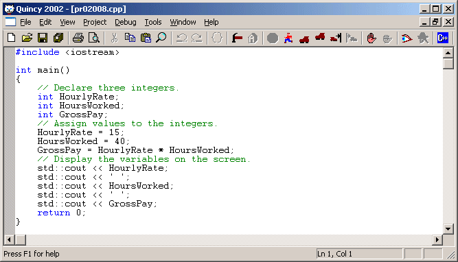
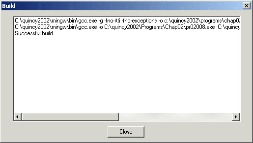
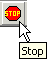
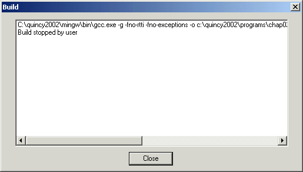
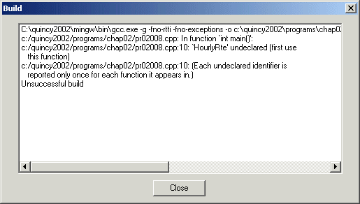

Quincy works with programs built from a single source code file or from a Quincy Project (Working with Projects) that includes a number of source code and library files.
This discussion is about building a program from a single source code file. The source code file must represent a compete program with a main function and no calls to functions outside the one source code file other than calls to functions supported by one of the libraries provided by the compiler. Here is a typical one-file program.

There are several options for how the program is to be compiled and how Quincy is to run it from within the IDE. You set these options prior to compiling and running the program. Quincy remembers the option settings from session to session.
Setting Options explains how to set options in Quincy. If you are working with a Quincy Project as described in Working with Projects , the options settings are stored in the Project file. If you are using Quincy with the tutorial examples as described in Example Programs , the tutorial command files set the options that each example uses even when no Project file is involved.To build the program:
Quincy launches the compiler programs to preprocess, compile, assemble, and link the source code into an executable program. The Build dialog, shown here, displays the progress of the build process.

The messages in the Build window include the commands that Quincy uses to run the compiler program. In this case you are interested in the last line displayed, which tells you that the program was successfully built. You can close the Build dialog and proceed with running and debugging the program as explained in Running a Program and Debugging a Program. .You can interrupt a build at any time by following this procedure:

Quincy displays the dialog shown here.

If the build involves errors or warnings, Quincy displays them in the Build dialog shown here.

If the dialog lists only warning messages, which are clearly labeled as such, the build completed and the program can be executed. You should strive, however, to write programs that compile cleanly--with no warnings.
If the dialog lists error messages, the build did not complete successfully.
When you double-click any message in the dialog, Quincy makes the editor the active window and moves the cursor to the offending source code line.
You can compile a source code file without building an executable program. Sometimes you do this just to see if the source code file has any errors. To compile a source code file:
Quincy compiles the source code file and does not attempt to build an executable program. You can review errors and warnings as described above.